Tutorial:
Paso1:
Al ejecutar el programa principal veremos lo siguiente:
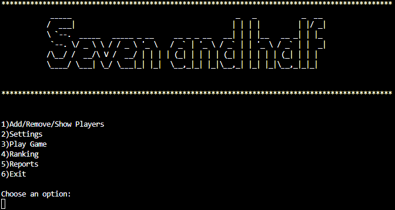Lo primero que debemos hacer es entrar en la opción 1)Add/Remove/Show Players. Para ello insertaremos el número 1 y pulsaremos intro. A partir de ahora, siempre que queramos entrar en alguna opción se hará de esta manera. Escribiendo el parámetro adecuado y pulsando intro.
Paso2:
Seguidamente saldrá por pantalla el menu Players DB:
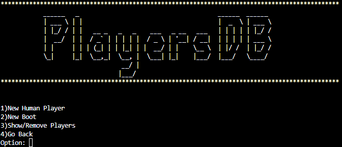En este menú estableceremos un nuevo jugador humano con nuestro nombre si es lo que se desea. Así que introducimos 1.
Paso3:
Nos pedirá que insertemos nuestro nombre, nuestro NIF y nuestro perfil de jugador. Esto último cambiará la manera de apostar automáticamente cuando estemos jugando. Además nos pedirá confirmación después de insertar todos los datos así que escribiremos "y" o "Y" para guardar los cambios.
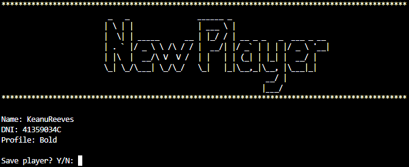Una vez hecho esto nos devolverá al menu players DB y podremos visualizar y confirmar la creación de nuestro usuario introduciendo 3 Show/Remove players.

Usaremos "quit" para salir. Y pulsaremos 4 para volver al menu principal.
Paso4:
Devuelta en el menú principal, esta vez seleccionaremos la opción 2 settings.
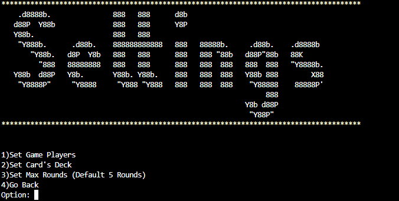Primero seleccionaremos la opción 1 Set game players para añadir jugadores en la partida.
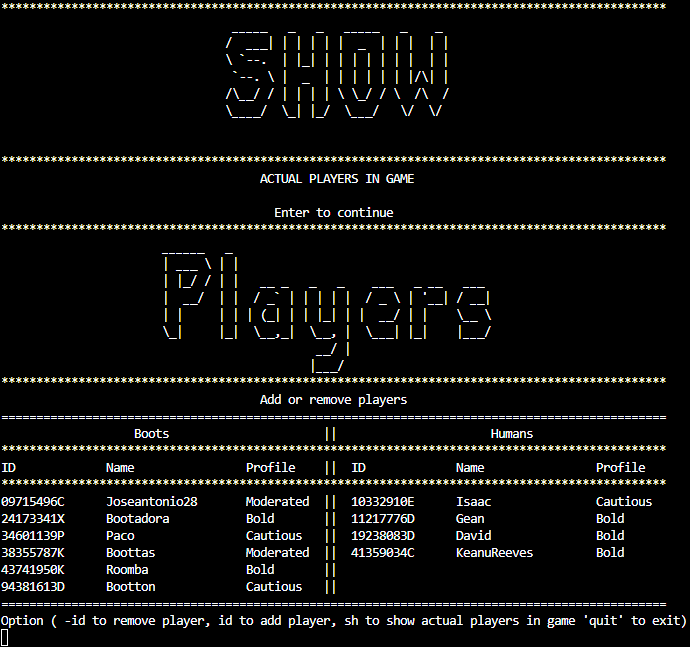Se nos muestra los jugadores actuales de la partida en la tabla "Show" y luego todos los jugadores. Tendremos que añadir un mínimo de 2 jugadores a la partida. Así que los seleccionamos uno a uno por su NIF e insertamos "y" para confirmar nuestra elección.
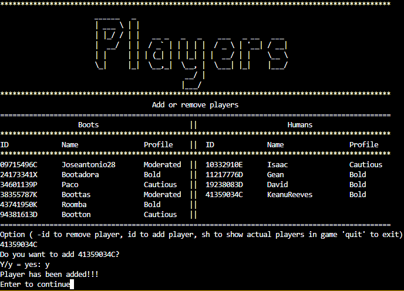Una vez hecho lo anterior usaremos "quit" para volver al menu settings.
Paso5:
Insertaremos 2 para seleccionar la baraja de juego.
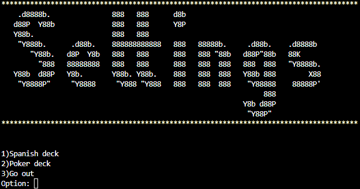Escogeremos la baraja deseada, la de poker o la española y nos devolverá al menu settings.
Paso6:
Insertaremos 3 para seleccionar el número de rondas.
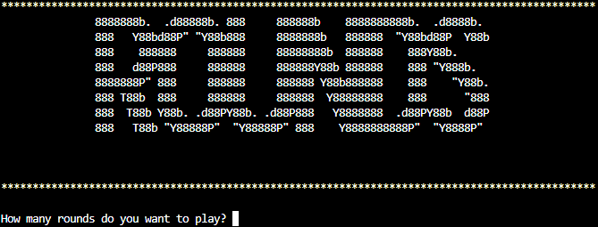Luego de insertar las rondas deseadas nos devolverá al menú settings y pulsaremos 4 para volver al menú principal.
Paso7:
Tras tener configurado todo lo anterior seremos capaces de insertar 3 para empezar la partida.
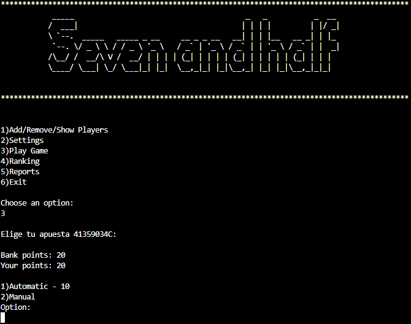Seleccionaremos 1 para apostar nosotros mismos o 2 para jugar el turno automáticamente.
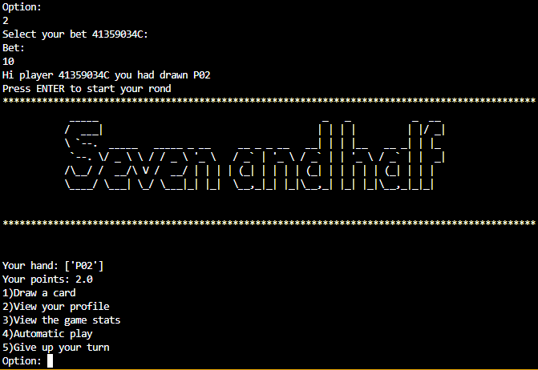Seguidamente según nuestro criterio escogeremos otra carta con 1, miraremos los puntos que llevamos con 2, miraremos los turnos de los demás jugadores con 3, jugaremos aleatoriamente con 4 o nos plantaremos con los puntos actuales con 5.
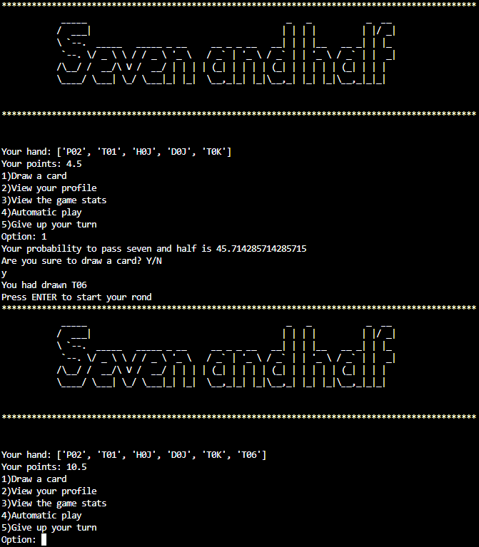En este caso nos hemos pasado de 7.5 así que nos plataremos y perderemos los puntos apostados. Seguiran transcurriendo las rondas y tendremos las mismas opciones a escoger hasta el final del juego.
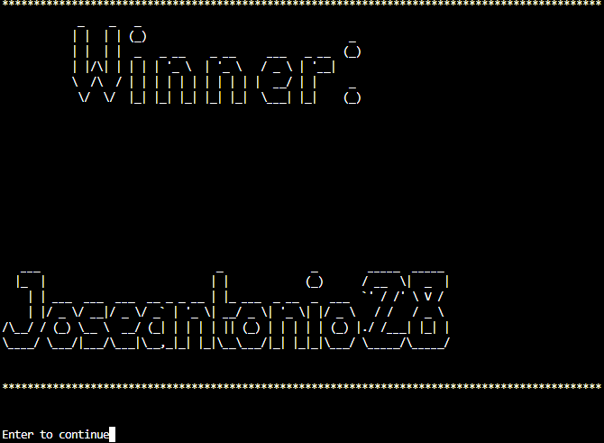Finalmente Saldrá un mensaje con el ganador del juego y nos devolverá al menú principal.